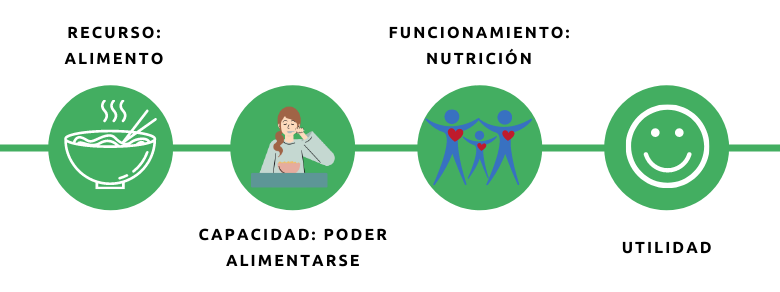

Nueva estrategia Desarrollo Social DECOM
Contexto
La nueva estrategia de desarrollo social de DECOM está enmarcada en un proceso de modernización en la gestión de los programas ejecutados por la Dirección, e impulsada por la necesidad de brindar mayor protección a los vecinos y vecinas de Las Condes, que se han visto afectados por la crisis económica en el contexto de pandemia COVID-19.
Este proceso se apoya en la definición de un modelo de brechas de bienestar a nivel local, que utiliza de base la metodología de pobreza multidimensional (Alkire & Foster, 2011). El modelo evalúa una cantidad definida de dimensiones asociadas a un concepto de bienestar social, sobre las cuales las distintas políticas sociales de DECOM deben operar.
El concepto de bienestar que aquí se utiliza, se desprende del enfoque de capacidades de Amartya Sen, cuyas reflexiones respecto al desarrollo humano, han puesto el foco del bienestar en las personas, la ampliación de sus capacidades y la protección de funciones elementales y complejas, para perseguir aquellos resultados que por diversas razones valoran para sus vidas.
El trabajo desarrollado para presentar la nueva estrategia social, se divididó en cuatro etapas resumidas en el diagrama adjunto. Las distintas fases se fueron realizando de manera paralela, cada una con hitos y productos entregados a la Dirección. Corresponde agradecer la colaboración de los equipo involucrados en las distintas etapas, y esperamos que esta estrategia de desarrollo social trascienda a la gestión de esta dirección.

1. En una primera etapa de trabajo se realizó un diagnóstico sobre el estado de la oferta programática de DECOM. Se revisaron los setenta y siete programas sociales, y se evaluaron las líneas de acción de estos dentro de las dimensiones del modelo de pobreza multidimensional: Educación, Salud, Trabajo y Seguridad social, Vivienda y entorno, y Redes y Cohesión social.
Al mismo tiempo, se revisaron los instrumentos de focalización y la coherencia de los indicadores utilizados con la definición de la población objetivo de los programas, y la coherencia interna de los instrumentos en relación a las variables evaluadas.
2. La segunda parte del proceso correspondió a la definición de un modelo de bienestar social local. Se hizo una revisión en literatura académica respecto de medidas de bienestar a nivel internacional, y se diseñó un modelo multidimensional de bienestar bajo el cual se empaquetó la oferta programática existente dentro de DECOM
3.
4.
Definición de un modelo de bienestar local
"El bienestar tiene relación con la libertad. Es la capacidad que poseen las personas de realizar aquello que por diversas razones valoran para sus vidas - (Sen, 1984).
La necesidad de contar con indicadores de bienestar más complejos que la observación de condiciones puramente económicas, queda manifiesta en el reporte de la Comisión sobre la medición del Desarrollo Económico y Progreso Social de Paris, elaborado por Stiglitz, Sen y Fitoussi (2009).
En esta materia, se ha avanzado de manera sustantiva mediante la creación de indicadores multidimensionales de bienestar en diversos países. El Reino Unido, Alemania, Australia, Nueva Zelanda o Bután con su llamativo índice nacional bruto de felicidad, han seguido este camino. Si bien no existen métricas absolutas para la medición del bienestar, hay una demanda creciente por este tipo de indicadores para el diseño de las políticas públicas (Alkire, 2015).
En general las propuestas para la definición de modelos de bienestar se apoyan en el enfoque de capacidades de Amartya Sen. Este, ha despertado un interés mayor en los años recientes, especialmente por la riqueza filosófica de su propuesta entorno al desarrollo humano y la justicia social centrada en la libertad y preferencias de las personas (Alkire, 2005; Comim, Mozaffar & Qizilbash, 2008).
El enfoque de capacidades pone en relevancia la necesidad de evaluar el bienestar centrado en las personas y su agencia (libertad de actuar en consecuencia con lo que se valora), en lugar de definiciones fácticas de consumos esperados (Sen, 2001). En términos prácticos, cuando diseñamos las políticas sociales con atención en la satisfacción de bienes primarios, y generamos asistencia basada únicamente en transferencia de recursos para la satisfacción de estas necesidades (enfoque de productos), dejamos de lado las distintas combinaciones de funcionamientos (seres y haceres) que permiten a las personas lograr aquello que aspiran para su vida, limitando de esta manera sus capacidades reales. Sabemos que esto resulta bastante abstracto, y en el siguiente diagrama se resume gráficamente lo expuesto con un caso práctico.

La situación que se presente es la de una persona que posee una cantidad determinada de alimentos (recurso) para satisfacer la necesidad fisiológica de alimentares. El enfoque clásico de economía basado en la satisfacción de necesidades básicas, nos indicaría que esa persona tiene cubierta su necesidad (resultado), solo por el hecho de contar con el recurso para hacerlo, y por tanto no requeriría de una intervención de política pública.
En cambio, en el enfoque de las capacidades el recurso aquí solo cumple un fin instrumental, y lo que realmente importa es el funcionamiento y la capacidad; el funcionamiento de ser o estar adecuadamente nutrido, y la capacidad de comer. Apliquémoslo al caso de una persona mayor que ha perdido la autonomía de poder alimentarse por sí sola, pero cuenta con el alimento (recurso). El enfoque de capacidades nos diría que no podemos asumir que ese individuo está satisfaciendo su necesidades por el solo hecho de tener alimentos, dado que el funcionamiento de estar adecuadamente nutrido no estaría dentro de su marco de capacidades, toda vez que no cuenta con la asistencia de un cuidador o alguien cercano, aún cuando tiene el alimento.

Propuesta para le medición de brechas de bienestar
Componente de transferencias condicionadas
Alkire, S. (2005). ‘Why the capability approach?’, Journal of Human Development, vol. 6(1), pp. 115–133
Alkire, S., & Foster, J. (2011). Counting and multidimensional poverty measurement. Journal of Public Economics, 95(7–8), 476–487.
Alkire, S. (2015). The capability approach and well-being measurement for public policy. In OPHI Oxford poverty & human development initiative. Working paper 94. Oxford University
Comim, F., Qizilbash, M., & Alkire, S. (2008). The capability approach: Concepts, measures and applications (1et ed.). New York: Cambridge University Press
Nussbaum, M., & Sen, A. (1993). The quality of life. Clarendon Press.
Sen, A. (1985). Well-Being, Agency and Freedom: The Dewey Lectures 1984. The Journal of Philosophy, 82(4), 169–221.
Sen, A. (2001). Development as freedom (1st ed.). Oxford: Oxford Paperbacks.
Stiglitz, J. E., Sen, A., & Fitoussi, J.-P. (2009). Report by the commission on the measurement of economic performance and social progress. Citeseer.

 (2) 29507613 / (2) 29507601
(2) 29507613 / (2) 29507601  Avenida Apoquindo 9070, Las Condes
Avenida Apoquindo 9070, Las Condes http://github.com/EstudiosDecom
http://github.com/EstudiosDecom  Felipe Vega (desarrollador)
Felipe Vega (desarrollador)